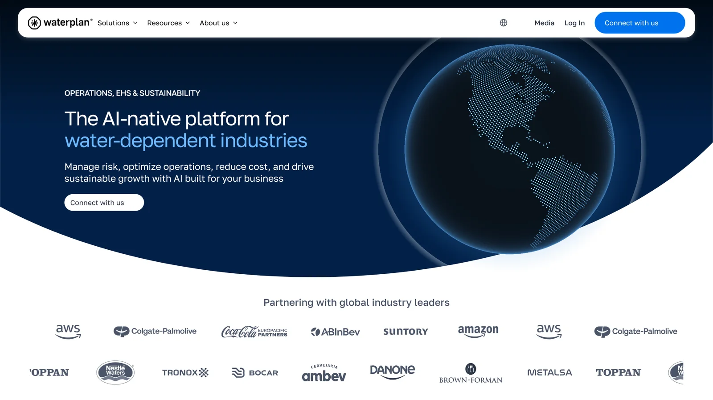
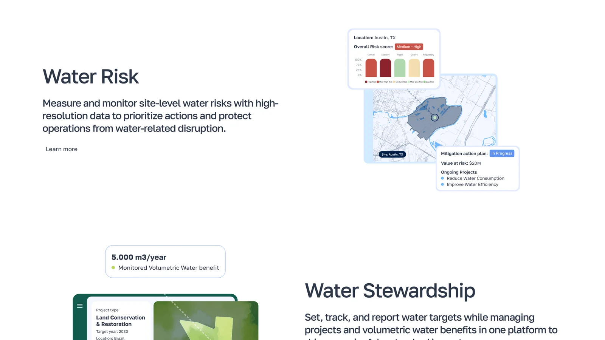
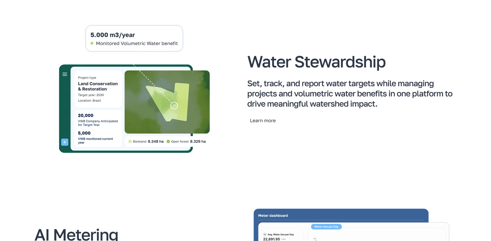
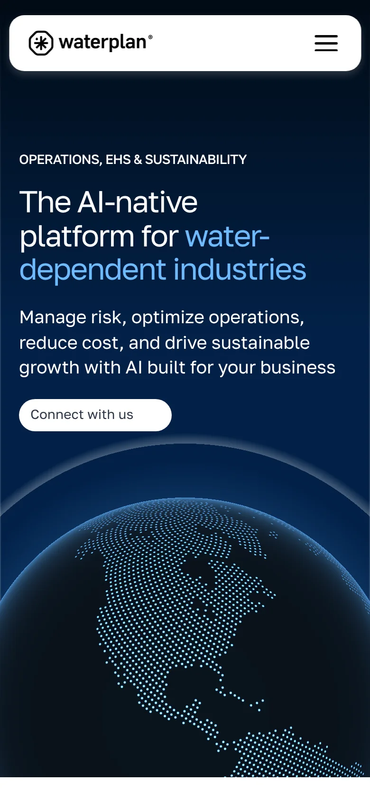

Making the link between territory, data and water-risk decisions visible.
Waterplan
This is an independent exploration of what was actually shipped. As tools and AI evolve, my approach to this kind of project has changed, so here is what I would do today instead of what I did.
- Shipped
- Sep 2024
- Project duration
- 8 months
The original project
The brand and its audience
Waterplan is a platform that helps large companies understand and manage their water use. Its customers, such as beverage makers and brewers, commit to water targets and track their progress toward them.
Large companies with water-dependent operations, and the teams that report and decide on water risk.
Needs and constraints
- Components and general layout were defined by a third-party agency using Framer.
- The real app could not be shown, so representative illustrations had to be created.




Screens captured from waterplan.com on 26 Oct 2026. The published site may have changed since the project shipped.
Reimagined concept
Reimagined
with AI
This is not a redesign of something that failed. It is a second look: what I would decide differently if I started from the same brief today, and how current tools let me test those decisions quickly.
1
What would I rethink today?
Water risk is about places: a river, an aquifer, a facility. Water imagery can easily become generic. The opportunity I see is to show how territory, data and decisions connect, so what the platform is for is understood before any screen is opened.
A dotted globe as the hero image.
One recognisable territory, seen from above.
WhyA specific place makes risk tangible; a globe keeps it abstract.
Product illustrations sit in cards next to the text.
Data graphics sit on the landscape itself.
WhyThe relation between a signal and the facility it affects is the message.
KeptPending: what carries over from the original, and why
2
What does that become?
The same territory, read in layers: first the ground, then the signals, the relations between them, two scenarios and the actions worth taking first.
Independent concept
Water risk,in context.
Territory, data and scenarios in one view, so teams can see what matters and decide what to do first.
Facility 04 · illustrative
Understand each site
Every site sits in a landscape.
Territory, signals and facilities in one view, so risk has a place and a reason.
Explore the platform →Exposure index
7849
- 1Protect the water intake
- 2Add storage upstream
- 3Shift peak withdrawal
The new visual direction
A visual language that serves one idea: reading a place.
Typography and hierarchy
Golos Text · 600 / 400
Aa
Water risk, in context.
Territory, data and scenarios in one view.
Body copy stays short and calm. Numbers use tabular figures so comparisons are exact.
- Golos Text, in two weights: confident headlines, quiet body.
- Large scale for the idea, small for the evidence.
Palette and use of colour
- Deep navy#022148Hero and dark sections; text on light
- White#FFFFFFSpace, cards and reading surfaces
- Mist#F3F7FFAlternating light sections
- Blue#3675F0Water, data and primary actions
- Sky#6EB9FFRivers, links and data on dark
- Forest#065244Land and depth in the imagery
- Green#66CB71Selection and priorities: what to do first
Dark and white carry the page. Blue is for water and data; green marks what is selected and what to do first.
Image direction
- Aerial, deep blue water and forest-green land, so layers read clearly on top.
- One territory recurs across every piece, so the viewer learns it.
Composition and graphic resources
- Big image, little text.
- Layers always follow the same order: ground, signal, relation, scenario, priority.
Interaction and motion principles
- 1Layers appear in the order of reasoning.
- 2Motion explains cause; it never decorates.
- 3With reduced motion, the full composition is shown, still.
Bringing it to life
One short homepage, designed as a single piece. Everything below, from the hero to the mobile views, is cropped from it.
Independent concept
Water risk,in context.
Territory, data and scenarios in one view, so teams can see what matters and decide what to do first.
Facility 04 · illustrative
Independent concept
Water risk,in context.
Territory, data and scenarios in one view, so teams can see what matters and decide what to do first.
Facility 04 · illustrative
Understand each site
Every site sits in a landscape.
Territory, signals and facilities in one view, so risk has a place and a reason.
Explore the platform →Exposure indexFacility 04
ABCompare scenarios
Two futures, one territory.
See how a decision changes exposure on the same ground, before committing to it.
See a scenario →Decide what to do first
From signals to action.
Protect the water intake
Highest exposure at Facility 04.
Add storage upstream
Lowers peak risk in scenario B.
Shift peak withdrawal
Moves demand to lower-risk periods.
See every site in context.
Book a demoUnderstand each site
Every site sits in a landscape.
Territory, signals and facilities in one view, so risk has a place and a reason.
Explore the platform →Exposure indexFacility 04
ABCompare scenarios
Two futures, one territory.
See how a decision changes exposure on the same ground, before committing to it.
See a scenario →Decide what to do first
From signals to action.
Protect the water intake
Highest exposure at Facility 04.
Add storage upstream
Lowers peak risk in scenario B.
Shift peak withdrawal
Moves demand to lower-risk periods.
waterplan
Water risk,in context.
Explore the platformCompare scenarios
Two futures, one territory.
On mobile the same homepage keeps one idea per screen: first a place and its risk, then two scenarios side by side.
A sequence that shows the idea in seconds: switch the scenario and the exposure and the priorities respond.
Exposure index
7849
- 1Protect the water intake
- 2Add storage upstream
- 3Shift peak withdrawal
Three pieces that reuse the same territory in different formats.
waterplan
Read theterritory.
Water risk, in context.
Concept report
Water risk,in context
waterplan · Illustrative cover
Independent exploration